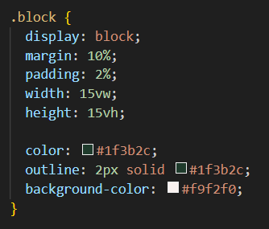
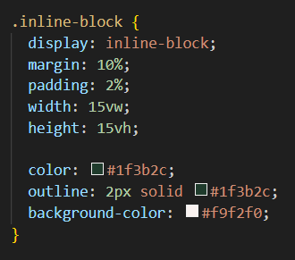

5 September 2023
Using CSS, there are countless ways to display HTML information. One of
these ways is by using the display property to show an HTML element as a
'block', 'inline', or combining properties of both into 'inline-block'.
Note: An HTML element is defined as the start tag, some content, and the
end tag. In the examples below, I have placed individual words between
HTML <span> tags.
- allows the user to modify the height and width of an element, however, it will create a line break (so that no elements are on the same line).
This what I have written in CSS to make the text appear as it does below:
"Te Houtaewa was the fastest runner of his day and played many pranks on his peoples enemies."
As you can see, the "block" property allows you to modify the height, width, margins and padding, but by default will try to take up the whole width of the screen. Even if you change the width to less than 50% of the screen (as I have done), it would change the size of the box but the two boxes will not line up one next to the other.
- does not allow the user to modify the height and width of an element, however, it will allow all elements to stay on the same line (if space allows).
This what I have written in CSS to make the text appear as it does below:
"Instead of going to the nearby gardens, Te Houtaewa set off for Ahipara as he wanted to annoy some Te Rarawa people who lived there."
In the example above, the height and width applied to the element are ignored, but the text stays "in line" with each other. If you widen and narrow the screen, the words want to be sitting next to each other unlike the example above. It also displays padding all around, but ignores margin on the top and bottom only (making this example look rather messy).
- allows the user to modify the height and width of an element, however, it will allow all elements to stay on the same line. Thus combining traits of both the named properties.
This what I have written in CSS to make the text appear as it does below:
"While Te Houtaewa was filling his baskets with kumara he was spotted stealing the kai (food). He was immediately recognised."
This last example shows properties of both inline and block (as the name suggests). It allows you to change all properties: height, width, margins, and padding. But it also tries to be "in line" as much as possible with one element coming directly after the other. Again, widen or narrow the screen to see how the boxes move relative to each other.